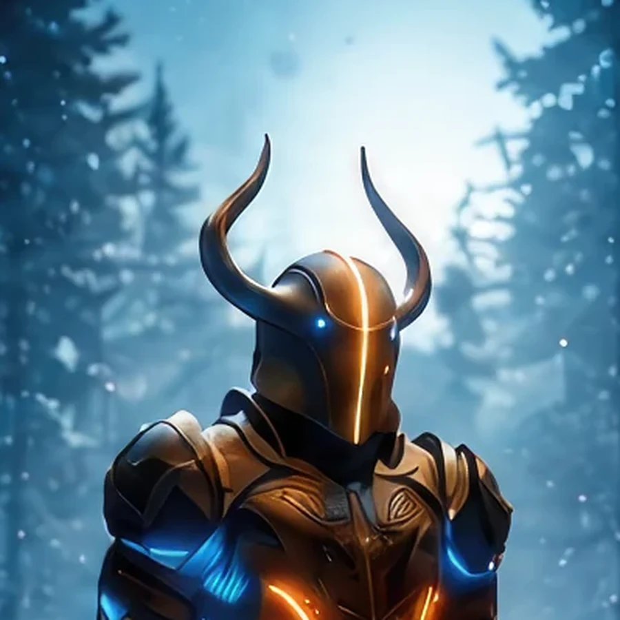
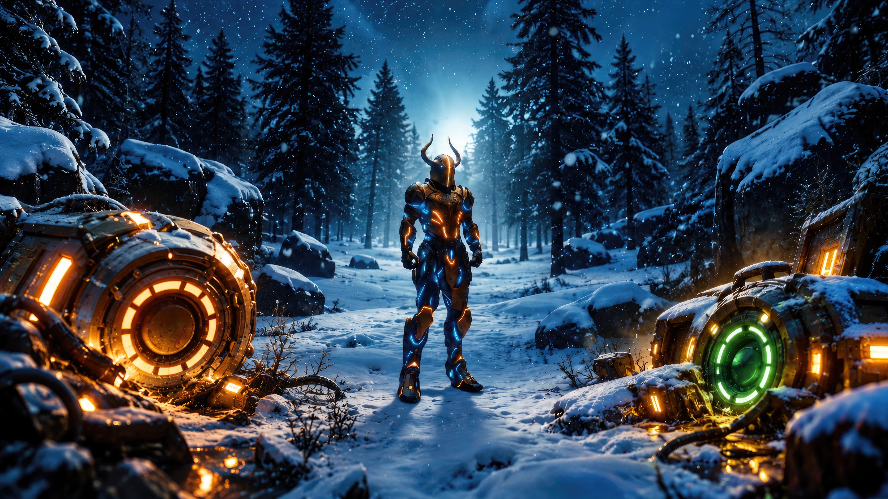
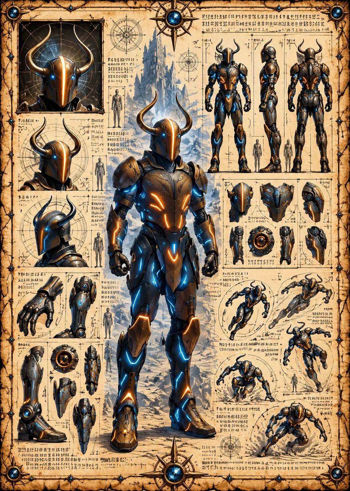

Field Observation
Omirae investigates a green energy device glowing at the right edge of the clearing. The device marks an active alien foothold in Earth 1's northern wilderness.
 ©
©
GENEZYS ARCHIVE · EARTH 1 · Legionnaire
Parallax Seer
Identity & combat record
Archive node 01 / 05

Archive record
Omirae sees the world from two angles at once, and spots every enemy hiding in the twilight. The Dusk Glint hits hard, and harder still against anyone already drained. Around the fire of the Longhouse, Omirae is the one who tells the Marauders what is coming.
Combat signature
Reflects twilight into victim's eyes: Deals 130 damage to 1 enemy. If the target has 0 Cosmara, deals 50 more.
Genezys 09:03 ™&©2026LEGIONS
Recovered visual record
Archive node 02 / 05

Full frame available // rotate device to landscape
Technical archive
Archive node 03 / 05

Classified field intelligence
Archive node 04 / 05
FIELD REPORT // ALIEN DEVICE CONTACT
Field Observation
Omirae investigates a green energy device glowing at the right edge of the clearing. The device marks an active alien foothold in Earth 1's northern wilderness.
Environment
Object Analysis
Key Findings
Motion archive
Archive node 05 / 05
Motion record not yet recovered